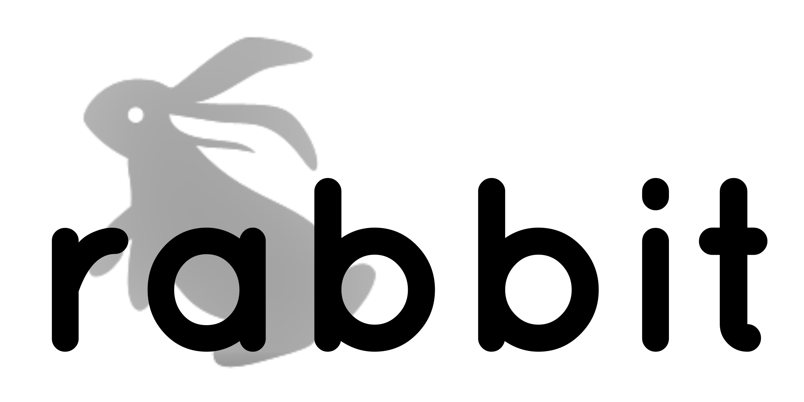

Home Contact Us The Zodiac Collection
Showcase
The Zodiac Collection
Rabbits rarely let anything standing in their way. They are agile thinkers and movers who will find their way over, around or under any of life’s roadblocks.
If anything or anyone does, perchance, defeat them, the resilient Rabbit will bounce back almost immediately.
Chinese Rabbits are associated with the moon from where, it is said, that they gather all their special qualities.
Non-judgmental, sympathetic (even eerily empathetic) and open-minded, Rabbits seem to draw a crowd of followers wherever they go, many of whom are seeking the sage advice only the Chinese Rabbit can offer.
This Chinese zodiac animal is a seeker of peace and detail oriented in the extreme. They will do everything in their power to avoid conflict and will leave not even the tiniest element of a project unfinished once begun.